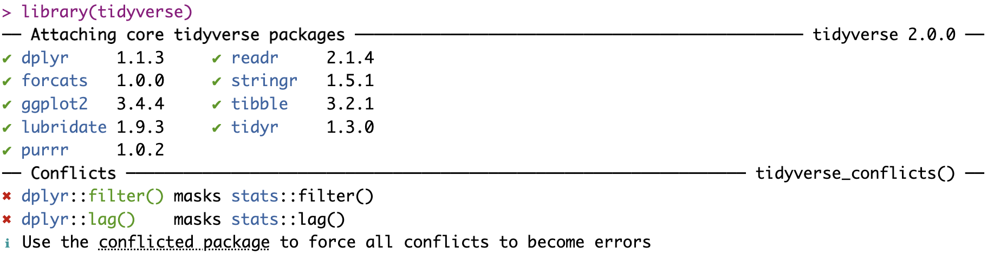
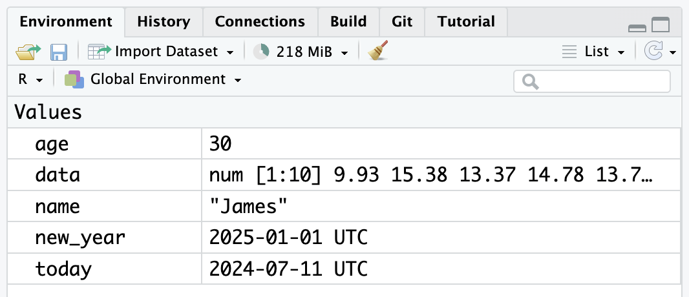
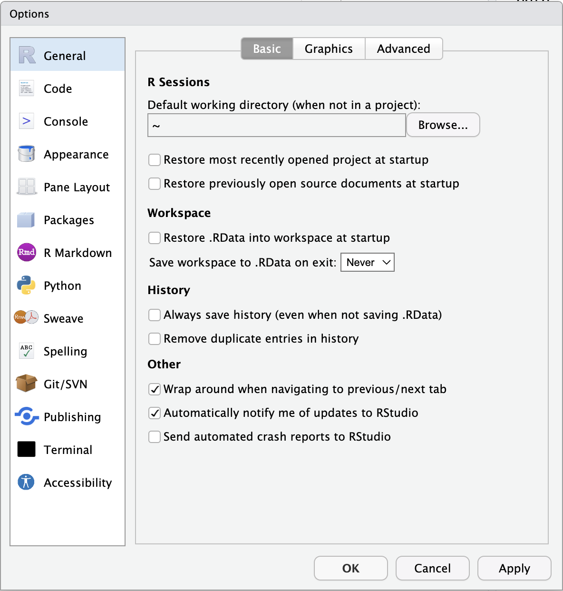

1 Introduction to programming with R/R Studio
In this chapter, we will cover interacting with R and RStudio. We will provide an overview of basic programming concepts and terminology, common pitfalls, helpful hints, and where to get help. Those of you who have no programming experience should find this chapter particularly helpful, but there should be helpful hints and tips even if you have used R or another programming language before before.
Chapter Intended Learning Outcomes (ILOs)
By the end of this chapter, you will be able to:
Navigate and interact with RStudio.
Use an R function and find help documentation.
Install and load R packages.
Assign content to an object.
Know where to find support from online resources and from the course team.
1.1 R and RStudio
R is a programming language that you will write code in and RStudio is an Integrated Development Environment (IDE) which makes working with R easier. Think of it as knowing English and using a plain text editor like NotePad to write a book versus using a word processor like Microsoft Word. You could do it, but it would not look as good and it would be much harder without things like spell-checking and formatting.
In a similar way, you can use R without RStudio but we wouldn not recommend it. The key thing to remember is that although you will do all of your work using RStudio for this course, you are actually using two pieces of software. This means that you will need both, you need to keep both up-to-date, and you should cite both in any work you do (see the Appendix on citing R and RStudio when needed).
But first we need to look at starting up R and RStudio. There are two ways you can use R for Psychology as a student here at the University of Glasgow. First, you can use a online version of R and R through your web browser and we will refer to this as the R server. Second, you can download and install R and RStudio for free on your laptop or desktop computer.
1.1.1 Installing R and RStudio on your computer
We recommend wherever possible installing R and RStudio on your own computer. This is known as a local installation as you do not need to be connected to the internet to use it. We find it is easier to save and manage your files, and you can take your computer wherever you go.
However, we appreciate not everyone has a computer that will support R and RStudio. All of our computer lab and library spaces have R and RStudio installed, so you will always be able to access those for working through the materials and your assignments. If you cannot install R and RStudio on your computer and there are accessibility issues preventing you from using the university computers, please come and speak with your course leads who will advise alternative options.
To install R and RStudio on your computer, please see the Installing R/RStudio guide which we use across all of our books. The guide covers installing R/RStudio on a Windows computer, Mac, and accessing the software on one of the university computers. Please install R and RStudio before continuing with the chapter.
1.2 Getting to know R Studio
By default, RStudio has four windows:
The console, where you can type R code in the bottom left (as shown in Figure Figure 1.1).
Eventually, there will be a script editor in the top left, but you will not see this when you open RStudio for the first time.
The environment window in top right, where you will see things like data, functions, and objects that you create.
Finally, the bottom right window shows files, plots, packages, and help documentation.
You will learn more about how to use the features included in RStudio throughout this course, but we recommend watching the RStudio Essentials 1 series of videos from the Posit team (the company who maintain RStudio). The video we link here lasts around 30 minutes and gives a tour of the main parts of RStudio.
1.2.1 Console vs. scripts
When you first open up RStudio, you will not see an R script like above, there will just be the console window taking up the whole left half. You can write code in the console to test it out, but you cannot save that code anywhere, and you would lose all your code if you closed down RStudio.
For this chapter only, we will use the console window to show you some simple R code, but from Chapter 2 - Creating reproducible documents - we will teach you to work in a type of R script called an R Markdown document which ends with the file name .Rmd.
You can open a new file in a number of ways, but the simplest is in the top menu of RStudio, selecting File >> New File >> R Markdown and clicking OK. You will then be able to see the extra pane in the top left like Figure Figure 1.1.
1.3 Writing code with functions and arguments
R code is made up of functions and arguments that go into the functions to create outputs. Functions in R execute specific tasks and normally take one or more arguments. You can think of these concepts like a spoken language as verbs (function) that require a subject and an object (arguments). You could also think of them as a kind of recipe. Some recipes (function) are quite simple and have one or two ingredients (arguments), while other recipes are more complicated with many ingredients (arguments).
You can spot functions as they end in round brackets (known as parentheses, ()), and the arguments go within the round brackets. They tend to look a bit like this:
That would be the layout of a function with two arguments and each argument takes a value. Bare with us as these concepts might feel super abstract until you start using them.
You will learn to use many functions throughout this book and you can look up all the arguments that a function takes in the help documentation by using the format ?function. You will see some arguments are required while others are optional. Optional arguments will often use what is known as a default setting, value, or option (normally specified in the help documentation) if you do not enter any value.
As an example, let us look at the help documentation for the function rnorm() - a function which randomly generates a set of numbers from what is known as the Normal Distribution.
1.3.1 Activity 1 - Finding help documentation for functions
Open up RStudio and in the console window (bottom left), type the following code:
The help documentation for rnorm() should appear in the bottom right help panel. In the Usage section of the help, we see that rnorm() takes the following form:
In the Arguments section of the help, there are explanations for each of the arguments:
nis the number of observations/numbers/data points we want to create,meanis the mean of the observations/numbers/data points we will create.and
sdis the standard deviation of the observations/numbers/data points we will create.
In the Details section of the help, it notes that if no values are entered for mean and sd it will use a default of 0 for the mean and 1 for the standard deviation. So, these are the values the function will use for its arguments of mean and sd if you do not state any. However, because there is no default value for n, this means that you must state a value for the arguments n, otherwise the code will not run.
This is all still a little abstract, so let us try an example. Still using rnorm() let us set the required argument n to ask R to produce 5 random numbers.
1.3.2 Activity 2 - Running your first function
Type the following two lines of code into your console window. Press enter/return on your keyboard at the end of each line to “run” that line. So, type set.seed(10072024) and press enter/return and then type rnorm(n = 5) and press enter/return. You will now see these numbers in your console window:
[1] -0.6773381 2.9686894 -1.0461339 -1.4800300 0.4313315These numbers have a mean close to 0 (M = 0.039) and a standard deviation (SD) close to 1 (SD = 1.784) - they are not exact because you only sampled a very small set and that sampling is random.
What does set.seed() do?
You can get R to generate seemingly random numbers, but they are not totally random. Computers generate random numbers through a predictable process, but they pick a starting point based on something like the clock time. If you run rnorm(n = 5) several times in the console, you will see the five numbers are different each time. However, when you run set.seed(10072024) first, you will get the same five numbers every time, which is useful when you want a random but reproducible set of numbers.
Now, we can play with the function and change the additional arguments to produce a different set of numbers. This time we will say we want 5 numbers again (n = 5) but we want our mean closer to 10 (mean = 10) and our standard deviation closer to 2 (sd = 2). We would do that as follows and you should see the output numbers below.
[1] 8.645324 15.937379 7.907732 7.039940 10.862663This time, we created 5 random numbers again, but this set has a mean close to 10 (M = 10.079) and a SD close to 2 (SD = 3.569). Hopefully, you are starting to get a sense of arguments within functions, how you can change them, and how you can always remember to use the help documentation to understand what arguments a function requires.
Over time, you start to remember which arguments you need within functions you commonly use, but even experienced R users have to regularly check the documentation. Coding is not a memory test, so do not worry if you find yourself needing to constantly look up the name of arguments.
Error mode
One thing that can be intimidating at first is making **<a href=‘https://psyteachr.github.io/glossary/e#error’ target=’_blank’ class=‘glossary’ title=‘The statistical error in a linear model is how much an observation’s value differs from the (typically unobserved) true value of a population parameter.’>errors**. They have little red marks and produce sometimes vague messages to try and explain what went wrong. You will make many errors as you learn and over time, you do not stop making errors, but you get faster at working out what went wrong and how you can fix it. So, we will introduce you to common errors as we work through the book to help with problem solving.
Try and run the following code in the console:
You should get an error saying something like Error in rnorm(mean = 10, sd = 2): argument "n" is missing, with no default. This error message is useful as it is telling us we forget to state the n argument which has no default value, so the function has no idea how many observations to give you. You would fix this error by adding a value for n within the function.
1.3.3 Stating argument names
In the examples above, we have written out the argument names in our code (for example, we wrote n = 5, mean = 10, sd = 2), however, this is not strictly necessary. The following two lines of code would produce very similar outputs with the same number of values and similar means and standard deviations. Remember though: each time you run rnorm(), it will produce a slightly different set of numbers unless you set a seed.
The main thing is that both lines of code would still work - the code knows what to do with the numbers. Both options work as the code is following a set order of arguments: n then mean then sd. If you do not write out the argument names, the code will use the default order of arguments, which for rnorm will assume that the first number you enter is n, the second number is mean, and the third number is sd.
So, you can write the argument names or not, but it is important to know the default order if you choose not to write the argument names. Alternatively, if you write out the argument names, then you can write the arguments in whatever order you like. The code below will still work and produce six numbers with a mean close to 3 and a standard deviation close to 1.
When you are first learning R, we recommend writing out the argument names every time as it can help you remember and understand what each part of the function is doing. However, as your skills progress you may find it quicker to omit the argument names and you will also see examples of code online that do not use argument names. In this course, we will always write out the argument names the first time we use each function, but afterwards, we may omit them.
Warning
If you do omit argument names, it is important to check the values you use for arguments are the ones you intended to you. The sneakiest errors are the ones that “work” in that they do not produce an error, but they are doing something different to what you expect. For example, if you wanted five numbers with a mean of 1 and SD of 2, rnorm(5, 2, 1) would work, but we accidentally entered the mean and SD the wrong way around.
1.3.4 Tab auto-complete
One very useful feature of RStudio is the tab auto-complete for functions (see Figure Figure 1.2). If you write the name of the function and then press the tab key on your keyboard, RStudio will show you the arguments that function takes along with a brief description. If you press enter on the argument name, it will fill in the name for you, just like auto-complete on your phone.
You can also use the tab button when writing a function name to auto-complete that function name or to find functions that start with certain letters. This feature can be really helpful if you cannot quite remember the name of a function or argument.

1.4 Base R and packages
When you install R, you will have access to a range of functions including options for data wrangling and statistical analysis. The functions that are included in the default installation of R are typically referred to as Base R and there is a useful cheat sheet that shows many Base R functions about halfway down this page under Contributed Cheatsheets here, along with a host of other cheatsheets you might find useful.
However, the power of R is that it is extendable and open source. If a function does not exist or does not work very well, anyone can create a new package that contains data and/or code to allow you to perform new tasks. You can think of Base R as the default apps that come on your phone and other packages as additional apps; the ones that you really want to use to make the phone your own, but you need to download them separately.
1.4.1 Activity 3 - Install the tidyverse to your own computer
To use a package, you must first install it. The following code installs the package tidyverse, a package we will use extensively throughout this course and introduce in the next chapter.
Warning
Please do not complete this activity if you are working on the online R server or if you are using the computers in a University lab or Boyd Orr Building. You should only complete this activity on your own device. The university computers and server already have a version of all the packages we introduce you to, and installing a new version can cause problems by having a conflict between one version on your user profile and another version on the system profile.
If you are working on your own computer, use the code below to install the tidyverse and typing it into the console and pressing enter/return. Remember: if you are using the online R server or using a university computer, then skip this activity.
Important
If you have a Windows computer and get an error message that says something like “WARNING: Rtools is required to build R packages” you may need to download and install an extra bit of software called Rtools. This was part of the R/RStudio installation instructions, so please see Installing R for more detailed instructions.
You only need to install a package once, but each time you start R / RStudio, you must load the packages you want to use. This is like how you need to install an app on your phone once, but you need to open it every time you want to use it.
To load packages, we use the function library() which loads packages into your working library. Typically, you would start any analysis script by loading all of the packages you need, but we will come back to that in the next chapter.
1.4.2 Activity 4 - Load the tidyverse
Run the code below to load the tidyverse into your working library. You must complete this activity regardless of whether you are using your own computer or the university computers / online server.
Often when you load packages you get information in your console window. Some packages will provide little messages to tell you what it has done or warn you about something. Sometimes these messages can look like errors and make you panic, but try and read over what it is saying first. For example, you should have something that looks like Figure Figure 1.3 when you load tidyverse. You might think you have done something wrong as it has little red crosses, but it is just telling you that it has loaded a set of packages and there are some conflicts.

Now that we have loaded the tidyverse package, we can use any of the functions it contains but remember, you must run the library() function every time you start R.
1.4.3 Package updates
In addition to updates to R and R Studio, the creators of packages also update their code. This can be to add additional functions to a package, or it can be to fix errors.
One thing to avoid is unintentionally updating an installed package. When you run install.packages(), it will always install the latest version of the package and it will overwrite any older versions you may have installed. Often this is not a problem, but sometimes you will find that the update means your code no longer works as the package has changed substantially. It is possible to revert back to an older version of a package but try to avoid updating a package unintentionally.
Warning
To avoid accidentally overwriting a package with a later version, you should never include install.packages() in your analysis scripts in case you, or someone else runs the code by mistake. Remember, the online server and university computers will already have all of the packages you need for this course, so you only need to install packages if you are using your own computer.
1.4.4 Package conflicts
There are thousands of different R packages and each package has many functions. Unfortunately, different people develop different packages and sometimes they use the same name for different functions. For example, the packages dplyr and MASS both have a function called select(). Do not run the below code, but if you did you would see a warning telling you that there is a conflict.
Attaching package: 'dplyr'The following objects are masked from 'package:stats':
filter, lagThe following objects are masked from 'package:base':
intersect, setdiff, setequal, union
Attaching package: 'MASS'The following object is masked from 'package:dplyr':
selectYou would see a warning that The following object is masked from 'package:dplyr': select.
In this case, R is telling you that the function select() in the dplyr package is being hidden (or ‘masked’) by another function with the same name from the MASS package. If you were to try and use select(), R would use the function from the package that was loaded most recently - in this case it would use the function from MASS. This can be an issue because you think you are using one function but really you are using another. They often work differently and you get odd issues in your code that you do not expect.
There are various solutions but one simple one - if you already know of the clash - is to specify which package you want to use for a particular function by writing the code in the format package::function, meaning “use the function from the package”, for example:
Clashes are inevitable in your learning and when you see one, you will probably not spot it at first but you will learn to resolve them quickly.
1.5 Objects
So far, you have learnt about packages, and functions and arguments. Earlier we said functions give us outputs and another name for outputs - or at least specific types of outputs - are objects.
Objects are the output of functions but you can also create objects without functions. Most of your coding will involve creating and manipulating objects. Objects contain stuff, which could be numbers, words, or the result of functions, operations, and analyses.
The first key thing to know about objects is how to create them and to give them content. You assign content to an object using <- - often called the “left arrow” or the assignment operator which you can read as “assigned to”. Note that we do not use the = symbol as an assignment operator. There is a large discussion on why objects are assigned content and not equal to content but that is for another time. For now, just remember that we assign (<-) content, be it words, numbers, or function output, to objects.
1.5.1 Activity 5 - Create some objects
Type the following code into the console window and run each line. You should see that name, age, today, new_year, and data appear in the environment pane like Figure Figure 1.4.

Note that in these examples, name,age, and new_year would always contain the values James, 30, and the date of New Year’s Day 2025, but today will draw the date from the operating system on the day you are using the computer, and data will be a randomly generated set of data - as we saw earlier - so the values of these objects will not be static.
Try this
Try changing the name to your name and the age to your age, and seeing if they update in the environment window.
Importantly, for what we will learn in future chapters, you can use different objects in calculations and interact with each other. For example:
Finally, you can store the result of these operations on objects in a new object as below:
Remember that you may find it helpful to read <- as contains or assigned to, e.g., name contains the text James or James is assigned to the object name.
You will constantly be creating objects throughout this course and you will learn more about them and how they behave as we go along. For now, it is enough to understand that they are a way of saving values, that these values can be numbers, text, or the result of operations, and that you can use objects in further operations to create new objects.
What should I call objects?
In coding, we are trying to balance keeping objects names as short as possible to be easy to type repeatedly, while being informative enough that you know what they represent days, weeks, or months later when they are not fresh in your memory.
For example, dob might save time now, but birth_date will be easier to understand in future.
1.5.2 Looking after the environment
Now that you are starting to learn about the other windows in RStudio like the environment window, if you have been writing a lot of code, you may find that the environment window (or workspace) becomes cluttered with many objects. This can make it difficult to figure out which object you need and you run the risk of using the wrong value or data frame. If you are working on a new dataset, or if you have tried lots of different code before getting the final version, it is good practice to remember to clear the environment to avoid using the wrong object. You can do this in several ways.
To remove individual objects, you can type
rm(object_name)in the console. Try this now to remove one of the objects you created in the previous section. For example, you would remove the objectageby writingrm(age).To clear all objects from the environment, run
rm(list = ls())in the console.To clear all objects from the environment, you can also click the broom icon in the environment pane like Figure Figure 1.5.

1.6 Global options
When you open RStudio, it will show you what you were last working on, including your code and any objects you have created, assuming this is not the first time you have used RStudio. This might sound helpful, but it can cause more problems than it is worth because it means that you risk accidentally using an old version of an object.
For example, you might have Date in the environment from the last time you did some work and you start working on the wrong Date without realising. In reality, we recommend changing the settings so that each time you start RStudio, it opens a fresh new environment.
You can do this by clicking on the top menu Tools >> Global Options... and then deselecting boxes so that your General box looks like Figure Figure 1.6 and applying the changes to save your selections.

That should save a lot of hassle going forward. You will still encounter issues of course, so we are going to end this chapter by outlining where you can get help.
1.7 Getting Help
1.7.1 Help and additional resources
Learning to code really means trying stuff out, searching for help online when it does not work, and finding examples of code to adapt to your own needs.
If you are having difficulty with any of the content in this book, then you can of course ask for help from the course team but learning to problem solve effectively is a key skill that you will develop throughout this course and beyond.
There are a wealth of additional resources in the Appendix of this book, so it might be worth checking them out, but here are four approaches we take to resolving an issue when we hit a problem.
Use the help documentation. If you are struggling to understand how a function works or what the arguments are, remember the
?functioncommand.Think about when you last had to use this function or code successfully. Look back on what you did then and see what is the difference.
If you get an error message, copy and paste it into Google. It is very likely someone else has had the same problem.
Trying Googling your question in the style of the package name or function name and what you want to do. For example, arrange data tidyverse or maybe sort data in R.
If those approaches do not work, in addition to these course materials and the other PsyTeachR books from other courses we run, there are many excellent online resources for learning data skills that can serve as quick guides:
Individual package cheat sheets which you can find via the top menu:
Help >> Cheat Sheets.
1.7.2 Debugging tips
Another top skill for resolving issues is what is known as debugging - fixing your coding mistakes. A large part of coding is trying to figure why your code does not work and this is true whether you are a novice or an expert. As you progress through this course, try and keep a record of mistakes you make and how you fixed them. We will highlight common mistakes to look out for throughout the book but you will undoubtedly make (and fix) new mistakes yourself.
You never stop making mistakes, you just get better at problem solving and having a list of strategies that worked in the past. That is why we include error mode as a set of activities to develop your problem solving skills and normalise making errors.
As a short list of suggestions when you come across an error, keep in mind:
Have you loaded the correct packages for the functions you are trying to use? One common mistake is to write the code to load the package, e.g.,
library(tidyverse)but then forget to press enter/return to run it.Have you made a typo? Coding has to be specific on spelling and
datais not the same asDATA, andt.testis not the same ast_test.Is there a package conflict? Have you tried specifying the package and function with
package::function?Is it definitely an error? Not all red text in R / RStudio means an error. Sometimes it is just giving you a message with information.
1.7.3 Activity 6 - Reset your R session
Finally, if you find that your code is not working and you cannot figure out why, it might be worth starting a new session. This will clear the environment and detach all loaded packages. Think of it like restarting your phone.
When you open up R and start writing code, loading packages, and creating objects, you are typically doing so in a new session. In addition to clearing your environment workspace, it can sometimes be useful to start a new session. This will happen automatically each time you start RStudio on your computer, although sessions can persist if you use the online server.
This last activity shows a quick way to restart R from inside RStudio. On the Top Menu, click Session >> Restart R like Figure Figure 1.7.

Try not to worry about making mistakes. Accept that you will make them and learn from them. We are always here to help if you are struggling, so reach out to the course team, post on Teams, or attend a graduate teaching assistant (GTA) session.
1.8 Test yourself
Throughout the book, you will find additional questions and activities like these to help you check your understanding. Some will have blanks to fill in, some will be multiple choice, but the chapters include the answers and explanations to check your understanding against. You are always welcome to ask further questions to the course team though.
1.8.1 Knowledge check
Question 1. Why should you never include the codeinstall.packages() in your analysis scripts?
Explain this answer
Remember, when you run install.packages() it will always install the latest version of the package and it will overwrite any older versions of the package you may have installed.
Question 2. What will the following code produce?
Explain this answer
Question 3. If you have two packages that have functions with the same name and you want to specify exactly which package to use, what code would you use?
Explain this answer
You should use the form package::function, for example dplyr::select. Remember that when you first load your packages R will warn you if any functions have the same name - remember to look out for this!
Explain this answer
read_csv() looks like a function as it has the round brackets at the end and the <- is the assignment symbol, so it is most likely that 35 might be the input to an argument as it is just a value.
Explain this answer
Remember that functions tend to have round brackets or parentheses at the end of their name and the arguments and values go inside the parentheses.
<- is to send the output from the function to a/an
Explain this answer
This is the assignment operator (<-) and we use it to assign content such as the output of functions to an object.
1.8.2 Error mode
The following questions are designed to introduce you to making and fixing errors. Try and run the code, look at the error message, and see if you can fix it before checking the answer. Consider keeping a note of what kind of error messages you receive and how you fixed them, so you have a bank of solutions when you tackle errors independently.
Question 7. Type the following code into the console and press enter/return: rnorm(n = 10, meen = 5, sd = 1). You should get an error saying something like Error in rnorm(n = 10, meen = 5, sd = 1) : unused argument (meen = 5). How can you fix it?
Explain this answer
We accidentally spelt one of the arguments incorrectly. If you look closely, you will see that we typed meen spelt with two es instead of one e when we should have typed mean.
Question 8. To end on a sneaky one that we have not covered in this chapter, type the following code into the console and press enter/return: rnorm(n = 10, mean = 5, sd = 1. What happened and how can you fix it? Before checking the explain this answer box below, maybe try and Google what happens to see if you can describe it and find a solution.
Explain this answer
We missed the final bracket, so we start the function name rnorm(, enter our arguments, but there is no closing bracket. You will see in the console like Figure Figure 1.8, there is a little + symbol and you can enter new code, but there is no output.

This can be really frustrating as it looks like nothing is happening, but when you did not add a closing bracket, R is just sitting there waiting for you to add something else. To fix it, you can either type ) and press enter/return to finish the function and it should work, or you can press the escape (esc) key to cancel the code and start again.
1.9 Words from this Chapter
Below, you will find a list of words that we used in this chapter that might be new to you in case you need to refer back to what they mean. The links in this table take you to the entry for the words in the PsyTeachR Glossary. Note that numerous members of the team wrote entries in the Glossary and as such the entries may use slightly different terminology from what we used in the chapter.
| term | definition |
|---|---|
| argument | A variable that provides input to a function. |
| assignment-operator | The symbol <-, which functions like = and assigns the value on the right to the object on the left |
| base-r | The set of R functions that come with a basic installation of R, before you add external packages. |
| conflict | Having two packages loaded that have a function with the same name. |
| console | The pane in RStudio where you can type in commands and view output messages. |
| default-value | A value that a function uses for an argument if it is skipped. |
| environment | A data structure that contains R objects such as variables and functions |
| error | The statistical error in a linear model is how much an observation's value differs from the (typically unobserved) true value of a population parameter. |
| function | A named section of code that can be reused. |
| mean | A descriptive statistic that measures the average value of a set of numbers. |
| normal-distribution | A symmetric distribution of data where values near the centre are most probable. |
| object | A word that identifies and stores the value of some data for later use. |
| package | A group of R functions. |
| r-markdown | The R-specific version of markdown: a way to specify formatting, such as headers, paragraphs, lists, bolding, and links, as well as code blocks and inline code. |
| rstudio | An integrated development environment (IDE) that helps you process R code. |
| script | A plain-text file that contains commands in a coding language, such as R. |
| session | When you start R/RStudio and executive code to fill the workspace until you close R/RStudio |
| standard-deviation | A descriptive statistic that measures how spread out data are relative to the mean. |
| tidyverse | A set of R packages that help you create and work with tidy data |
1.10 End of chapter
Well done on reaching the end of the first chapter! This was one of the longest chapters in the book to introduce you to several foundational concepts of coding in R and RStudio. The next chapter builds on these skills to produce something a little more concrete by showing you how to create reproducible documents.